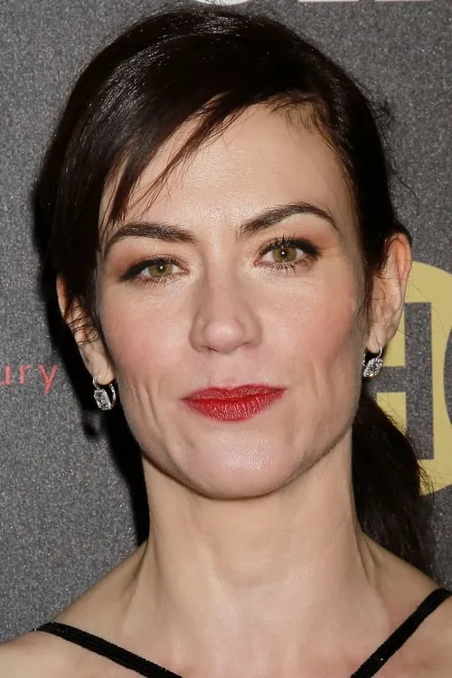
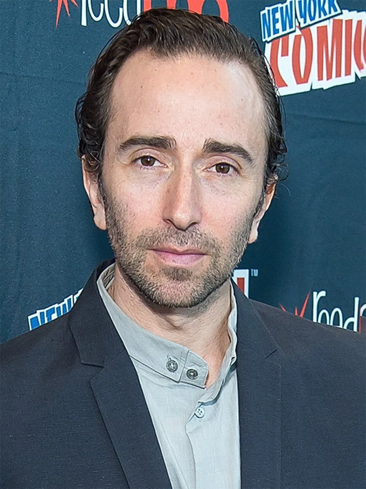
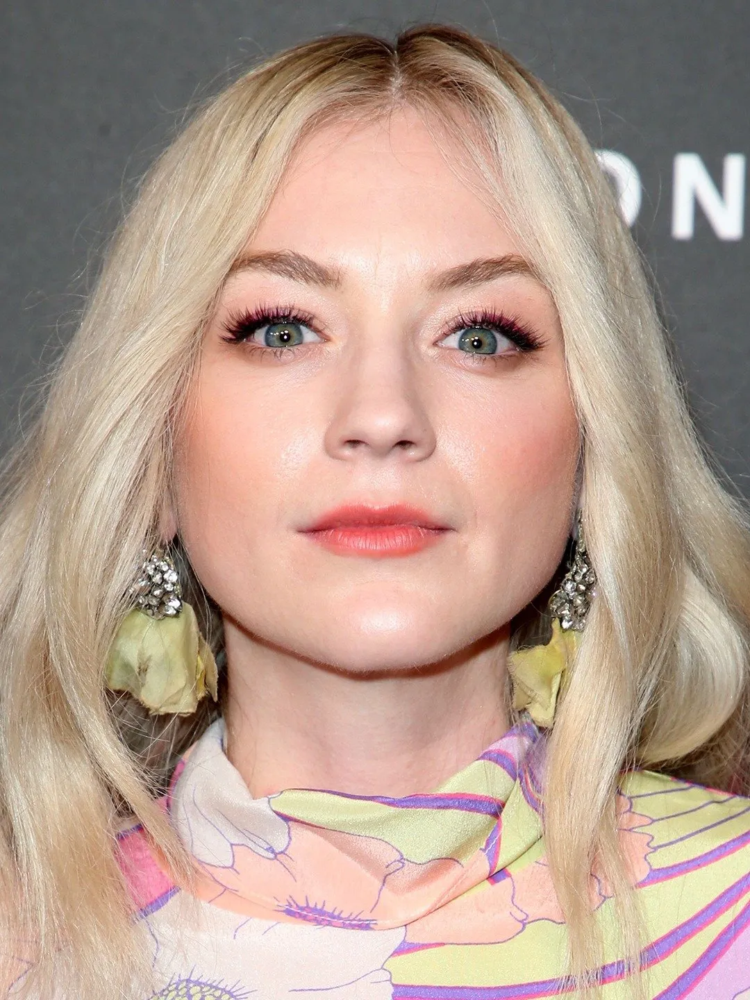

Concussion 2013
After a baseball accident leaves Abby with a concussion, the comfortable routine of her suburban family life no longer feels sufficient. She begins renovating a Manhattan loft and gradually creates a secret identity as Eleanor, an escort who sees female clients. As her two worlds begin to overlap, Abby must confront what she wants and what her choices may mean for the people closest to her.
Concussion (2013)
A Suburban Life Reconsidered After a Sudden Injury
Written and directed by Stacie Passon, Concussion is an independent drama about identity, desire and the quiet pressures of domestic life. Abby is a married mother whose carefully ordered routine begins to unravel after she is struck in the head by a baseball. While recovering, she reconsiders the life she has built and starts spending time in a Manhattan apartment she is renovating. Her new surroundings lead her toward a second identity as Eleanor, a high-end escort who takes female clients. The secret life initially offers Abby a sense of freedom and renewed confidence, but the boundary between her private world and her family life becomes increasingly difficult to maintain. Led by Robin Weigert and Maggie Siff, the film approaches midlife change through intimate character drama rather than easy answers.
Cast




More Like This